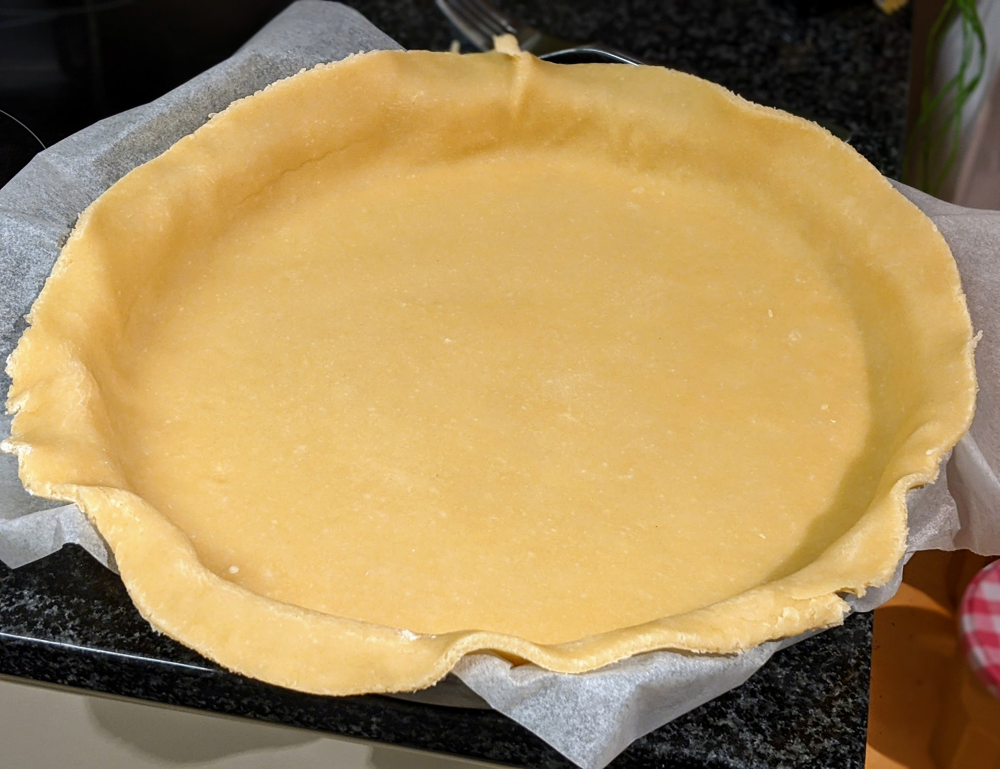

..@..♦.D.

|
Présentation 
|
Blog
|
Recettes
|

Pour une pâte :
Remarque : ces proportions font une pâte de taille standard, pas trop grosse. Si on utilise un moule plus grand que la moyenne, ajouter 20% ou même 40% aux proportions.
Remarque 2 : pour faire cuire une pâte brisée à blanc, mettre du papier sulfurisé avec des billes de cuisson (ou des lentilles, ou des haricots secs) par-dessus, et faire cuire à 180°C pour environ 10-15 minutes (plutôt 10 pour une tarte qui va ensuite passer au four, plutôt 15 si c'est sa seule cuisson). Puis, sortir la pâte, du four, la badigeonner avec un peu de blanc d'œuf au pinceau, et la remettre au four 5-10 minutes pour que ça dore un peu.
Remarque 3 : pour une version sucrée de la pâte, on peut rajouter 50g de sucre en même temps que la farine. C'est bien de faire ça pour les tartes dont la garniture est un peu acide, genre citron ou groseilles.